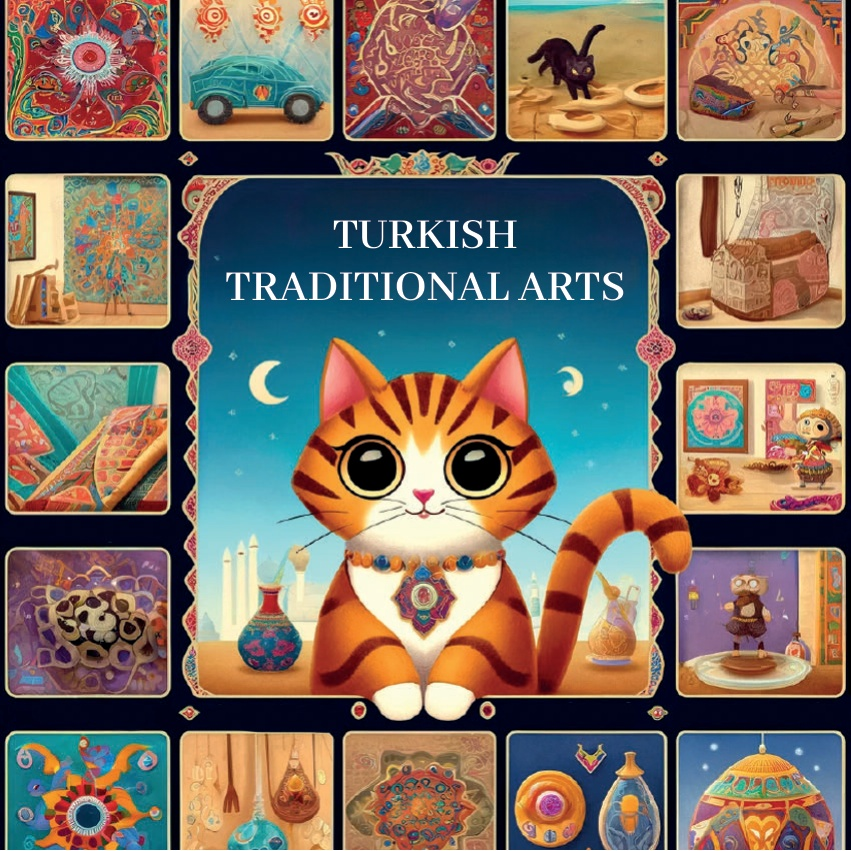
1

2

3
في قديم الزمان، في أرض مليئة بالعجائب تسمى تركيا، عاشت قطة فضولية اسمها كراميل. كانت كراميل تحب استكشاف أماكن جديدة وتعلم الفنون والحرف المختلفة. في صباح مشمس، وجدت خريطة ملونة قادتها إلى مدن مختلفة تشتهر بتقاليدها الفنية الفريدة.
4
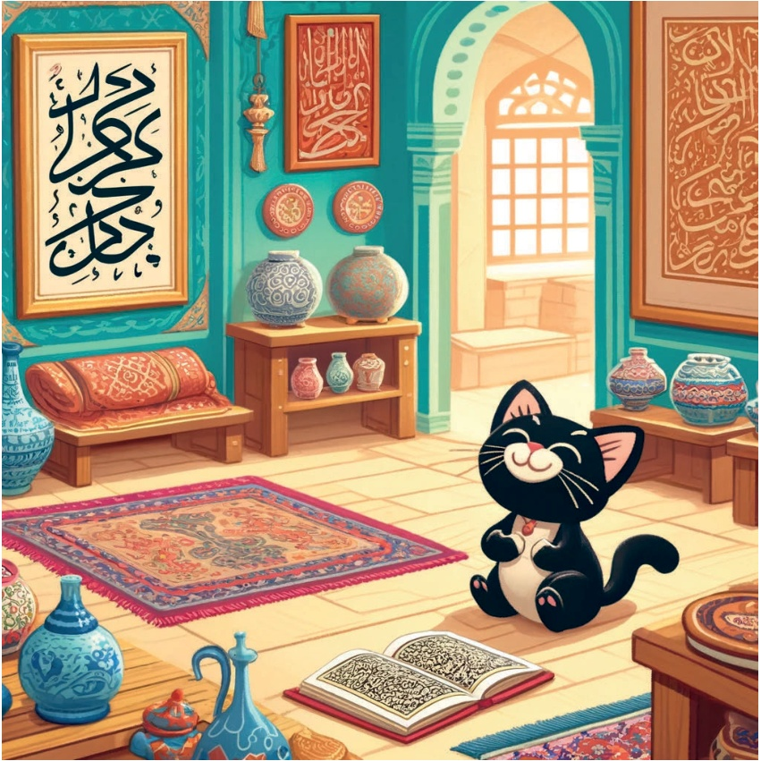
5
الخط العربي في إسطنبول.
كانت كاراميل أولاً في إسطنبول، حيث زارت ورشة عمل للخط العربي. شاهدت معلم خط عربي وهو يصنع خطًا عربيًا جميلًا، بخطوط أنيقة ومنحنيات رشيقة تحكي قصصًا على الورق.
6
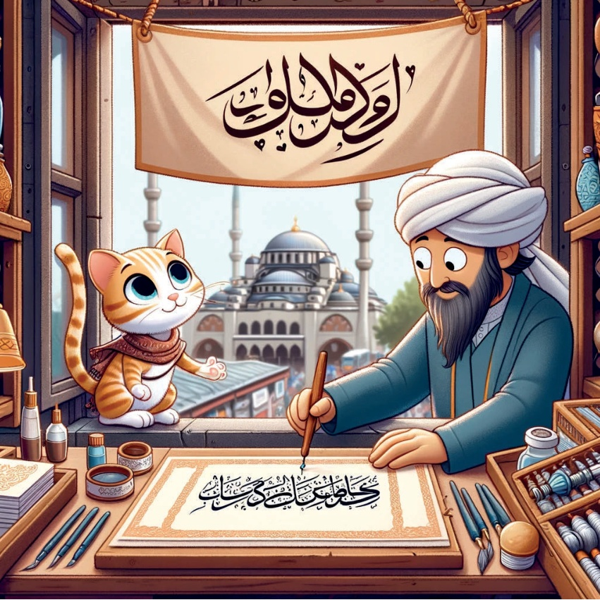
7
الخزف في كütahya.
ثم ذهبت كاراميل إلى كütahya، وهي مدينة مشهورة بخزفها الجميل. شاهدت حرفيين يرسمون رسومات معقدة على البلاط والفخار بمهارة كبيرة. ألوانها الزاهية وأنماطها التفصيلية أسحرت كاراميل.
8
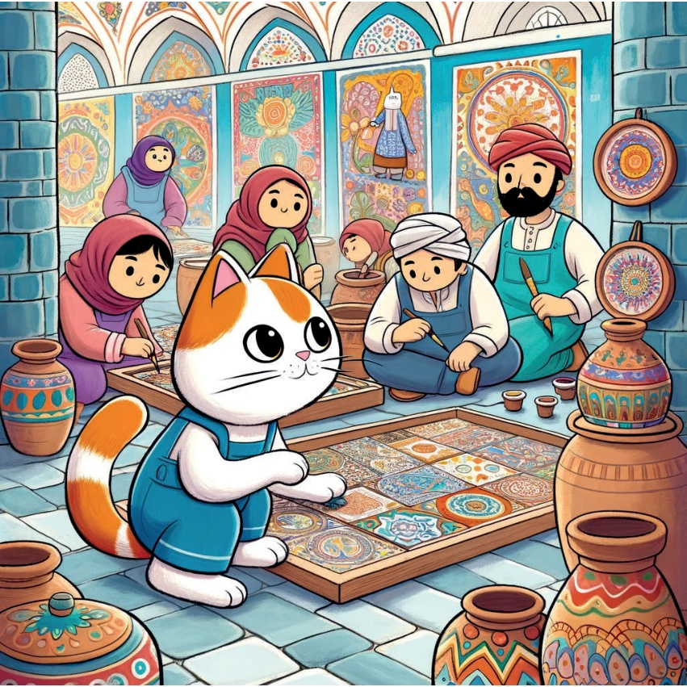
9
نسيج السجاد في قونية.
استمرت رحلة كراميل إلى قونية، وهناك زارت ورشة عمل لنسيج السجاد. انبهرت بالمهارة والصبر اللازمين لنسج نقوش وألوان زاهية في كل سجادة.
10
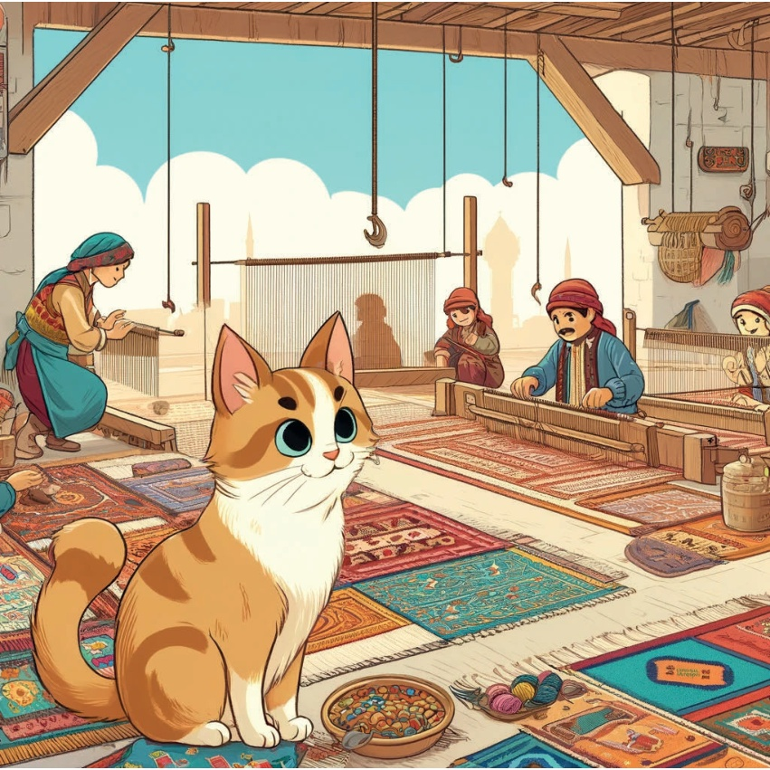
11
## مسرح الظلال في بورصة.
في بورصة، اكتشفت كاراميل عالمًا ساحرًا من فن العرائس الظلية. شاهدت فنانًا ماهرًا يحول شخصيات مثل كاراغوز وحاجي فات إلى حياة، ويحكي قصصًا مضحكة ومفيدة.
12
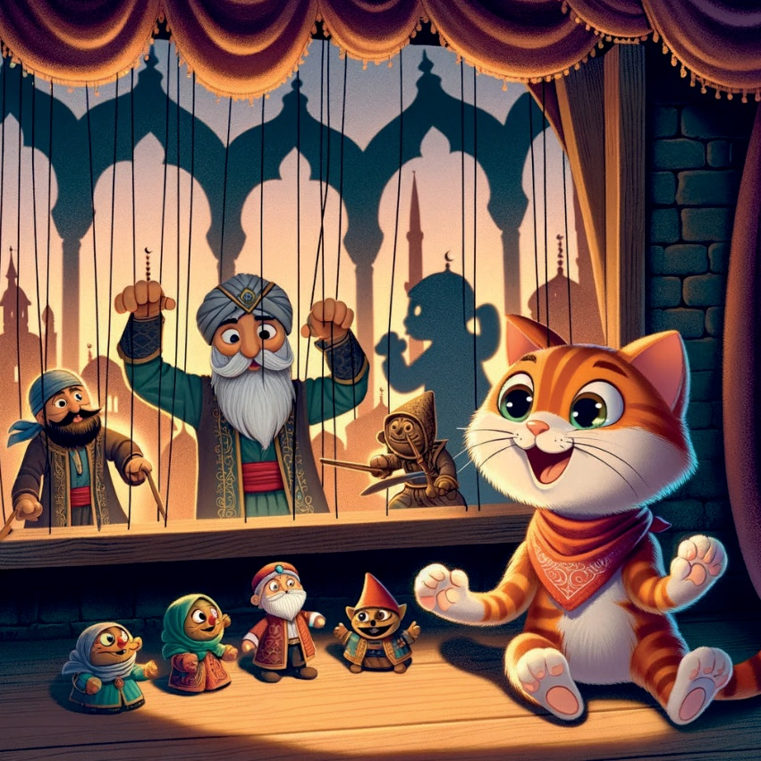
13
صناعة المجوهرات في مرسين.
ذهبت كاراميل إلى مرسين، وهناك التقت بصناع مجوهرات ماهرين يصنعون قطع مجوهرات جميلة. انبهرت بالعمل الدقيق والأحجار الكريمة اللامعة التي يستخدمونها.
14
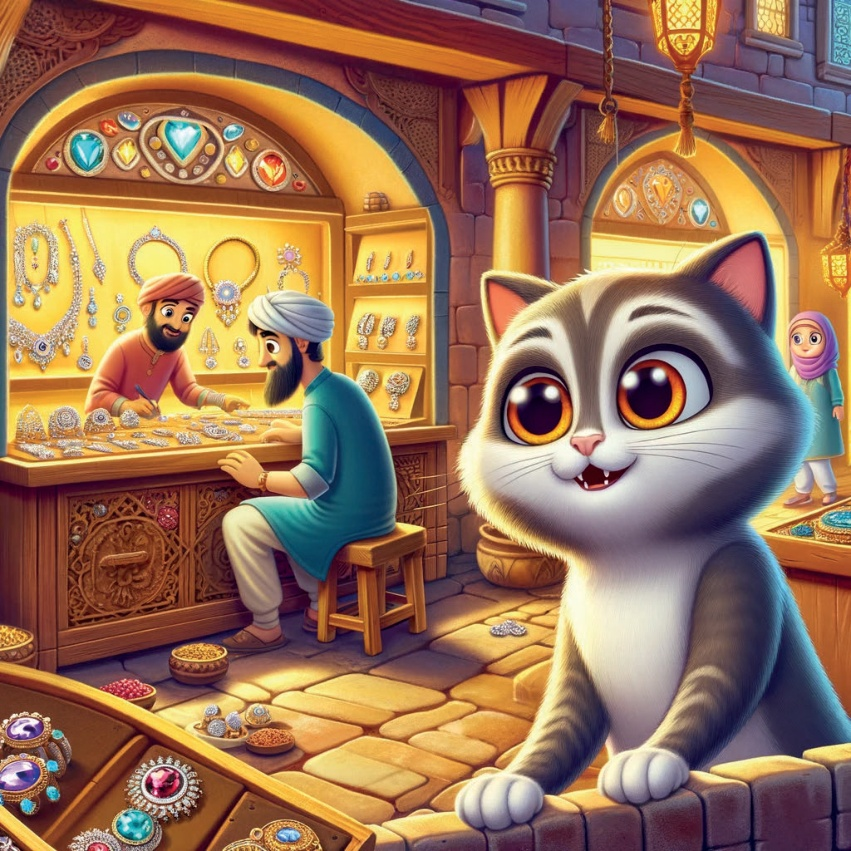
15
فن الزجاج في إسطنبول.
ذهبَت كاراميل في رحلة إلى إسطنبول، وهناك زارت ورشة عمل لفن الزجاج. انبهرت بكيفية تشكيل الفنانين للزجاج وتلوينه، ليصنعوا أعمالاً فنية رائعة.
16
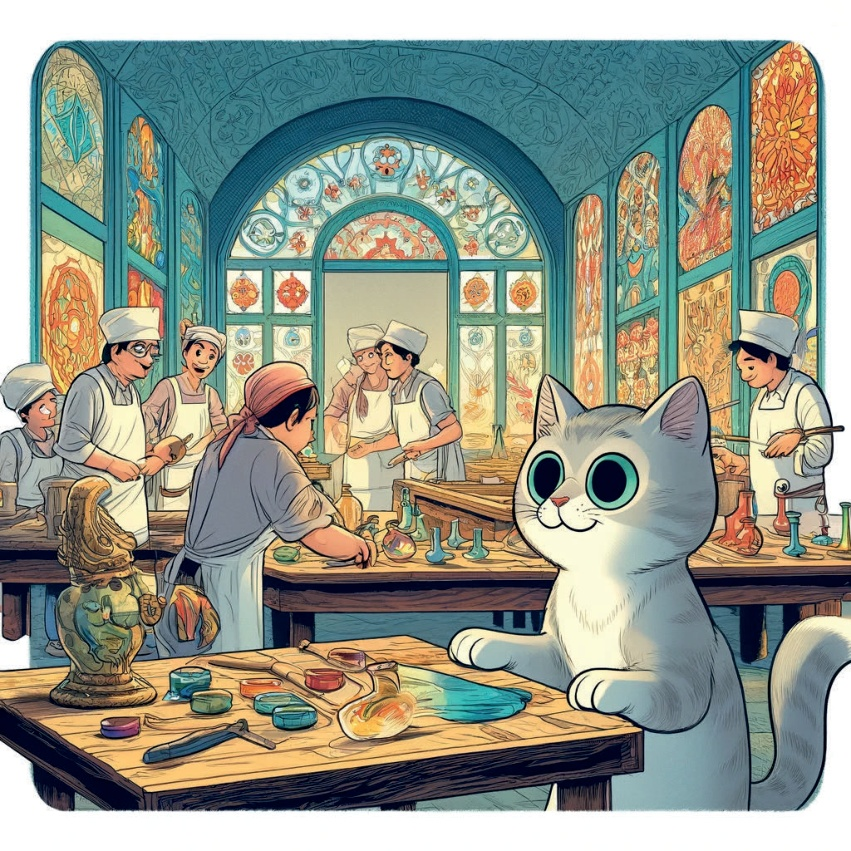
17
صناعة الجلود في غازي عنتاب.
رحلة كاراميل قادتها إلى غازي عنتاب، حيث تعرفت على فن صناعة الجلود. رأت حرفيين يصنعون رسومات معقدة على الجلود، ويصنعون قطعًا جميلة وعملية.
18
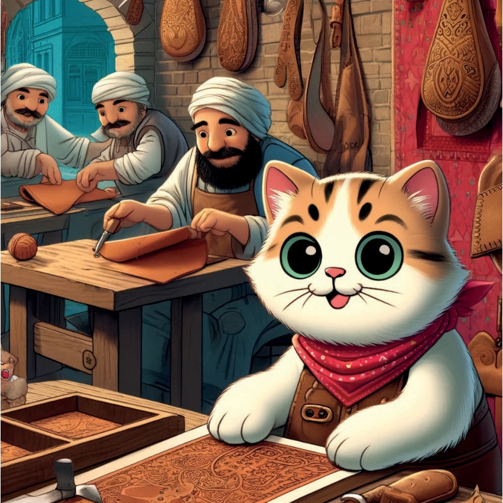
19
فن الإبروج في بورصة.
أخيراً، ذهبت كاراميل إلى بورصة لرؤية فن الإبروج، أو طلاء الماء الساحر. شاهدت الفنانين وهم يضعون الألوان بعناية على الماء ويصنعون أنماطاً جميلة ومنحنية، ثم ينقلونها إلى الورق.
20
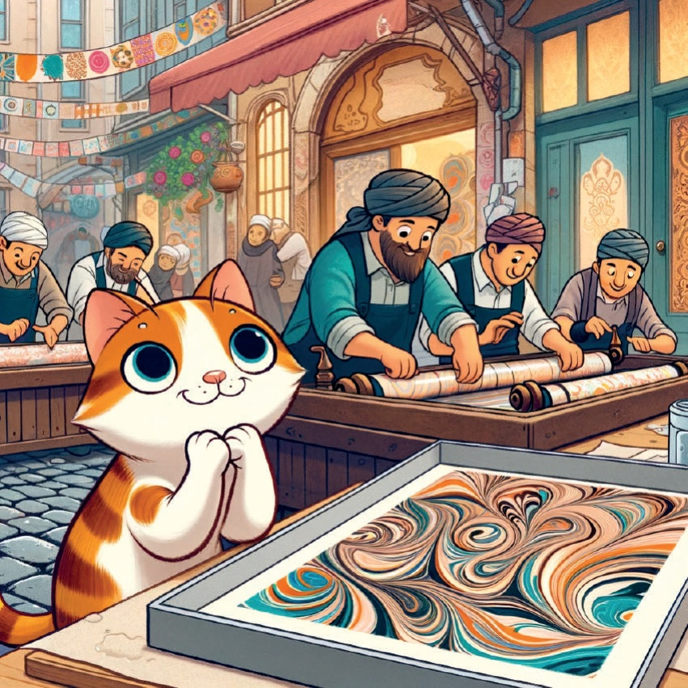
21
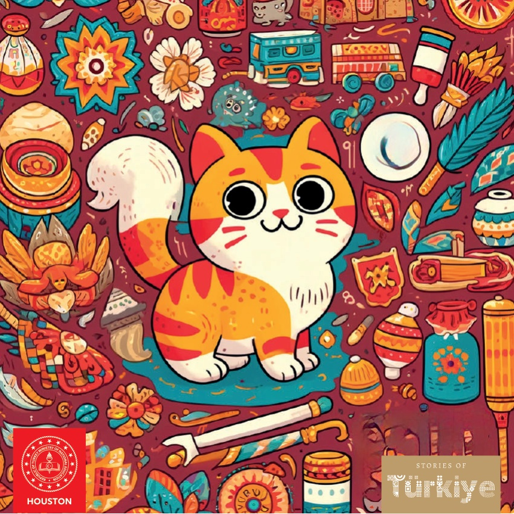
22